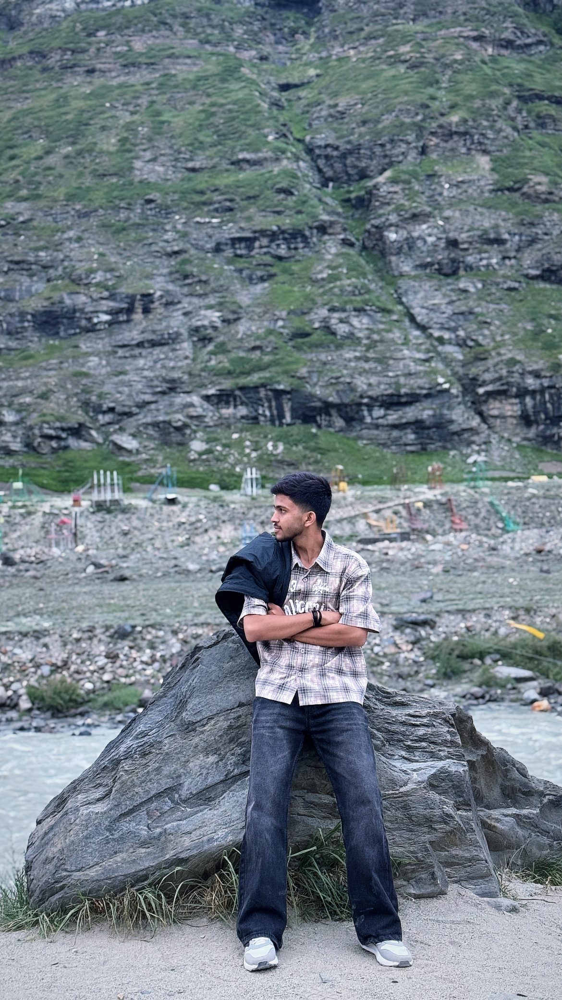

AI & Machine Learning
Training and fine-tuning models end to end — data pipelines, evaluation, and deployment into real, model-backed products.
A special day
Wishing you a year full of ideas, growth, and great work.
Portfolio -

Available for workI build models first, then the interfaces that put them to work — currently deep in an AI internship, training and shipping systems that hold up under real data.
I'm currently interning in AI, building and fine-tuning machine learning models end to end — from data pipeline to a working, testable system. Alongside that, I bring years of WordPress and frontend experience, so the models I build don't stay in a notebook; they end up in interfaces people actually use.
I care about the parts most people skip: model evaluation that isn't just accuracy, load performance, the fifty small decisions that separate "finished" from "considered." My tools change with the job; the standard doesn't.
Training and fine-tuning models end to end — data pipelines, evaluation, and deployment into real, model-backed products.
Custom themes, block editor systems, plugin architecture, and performance-tuned builds that stay easy to maintain long after launch.
Semantic, accessible interfaces built on modern CSS and vanilla JavaScript — fast by default, animated with intent.
Interfaces designed from the user's task backward — information hierarchy first, decoration only where it earns its place.
Scroll narratives, micro-interactions, and generative visuals for brands that want their site to feel handmade.
Lean payloads, semantic markup, and keyboard-first navigation — quality that shows up in Lighthouse and in daily use.
A lightweight ML recommendation layer for a media platform, tuned to surface relevant reads without heavy inference cost. Built during my AI internship.
A headless WordPress storefront rebuilt for speed — sub-second interactions across an 800-product catalog.
Editorial portfolio site for an architecture studio, built as a scroll-driven narrative with no frameworks — pure HTML, CSS, and JS.
A data-dense internal dashboard redesigned around clarity — fewer colors, clearer hierarchy, faster decisions.
Shree Ramkrishna Institute of Computer Education and Applied Sciences, Surat
7.95 CGPA
Late C. B. Kapadiya & Late L. C. Kapadiya Madhyamik Shala
60%
Shree Swaminarayan Gurukul Vidhyalaya
88.50%
I'm building models day to day and still take on WordPress and frontend work on the side. Based in Surat, working with teams anywhere.
mayurunagar555@gmail.com+91 63591 98825